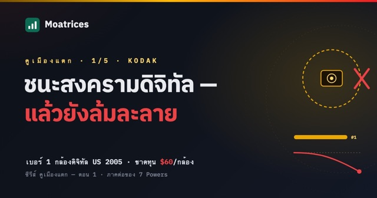
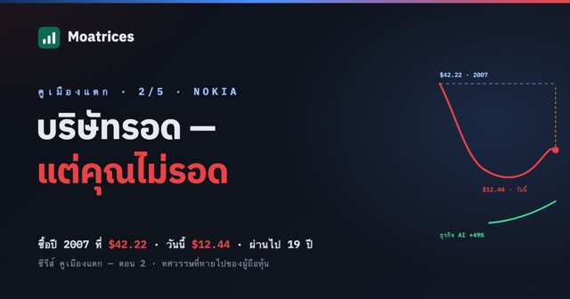
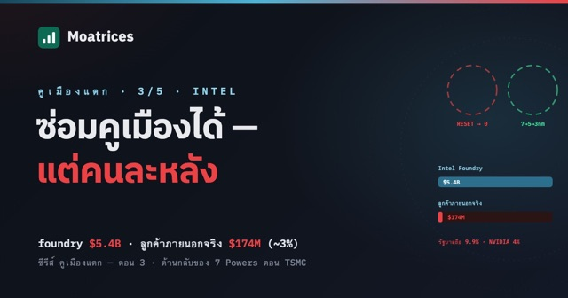
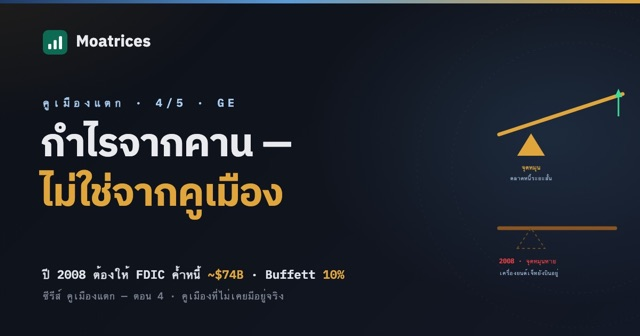
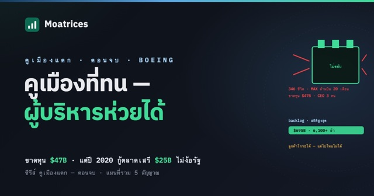

คูเมืองแตก — บริษัทไม่ตาย แต่ผู้ถือหุ้นตาย
ซีรีส์ 7 Powers เล่าว่าอำนาจถูกสร้างขึ้นได้อย่างไร ซีรีส์นี้คือภาคต่อที่ถามคำถามตรงข้าม: แล้วมันหายไปได้อย่างไร
และคำตอบไม่ใช่ "บริษัทเจ๊ง" อย่างที่หลายคนคิด — บริษัทยักษ์แทบไม่เคยล้มละลาย Nokia วันนี้ยังโต NVIDIA ยังลงทุนให้ · GE Vernova ทำจุดสูงสุดใหม่จากดีมานด์ AI · Intel กำลังฟื้น สิ่งที่คูเมืองแตกทำกับคุณจริงๆ ไม่ใช่การล้มละลาย มันคือทศวรรษที่หายไป — และสำหรับคนที่ตั้งใจถือยาวสิบปีขึ้นไป นั่นแหละคือหายนะตัวจริง
ห้าตอน ห้ากลไกที่ฆ่าคูเมือง ทุกตอนจบด้วย Kill Condition แม่แบบ ที่เอาไปจ่อกับหุ้นที่ถืออยู่ได้ทันที — เพราะถ้ายังตอบไม่ได้ว่าอะไรจะทำให้เราขาย แปลว่ายังไม่เข้าใจกิจการนั้นดีพอ
-
คูเมืองแตก ตอนที่ 1: Kodak — ชนะสงครามดิจิทัลแล้วยังตาย: เบอร์ 1 ในอเมริกาที่ขาดทุน 60 ดอลลาร์ต่อกล้อง
Kodak ไม่ได้แพ้เพราะปฏิเสธดิจิทัล ปี 2005 Kodak เป็นเบอร์ 1 กล้องดิจิทัลในอเมริกา และขาดทุนราว 60 ดอลลาร์ต่อกล้อง 7 ปีต่อมาล้มละลาย คูเมืองที่แตกไม่ใช่ กล้อง แต่คือวงจรเคมีที่เก็บเงินทุกครั้งที่ชัตเตอร์ลั่น

อ่านต่อ → -
คูเมืองแตก ตอนที่ 2: Nokia — บริษัทรอด แต่ผู้ถือหุ้นไม่รอด: 19 ปีที่ยังไม่ได้เงินคืน
Nokia ไม่ได้เจ๊ง วันนี้ NVIDIA ลงทุนให้ 1 พันล้านดอลลาร์ ยอดขาย AI โตเกือบ 50% แต่คนที่ซื้อตอนครองโลกปี 2007 ที่ 42 ดอลลาร์ วันนี้เหลือ 12 ดอลลาร์ ธุรกิจฟื้น ไม่เท่ากับคุณฟื้น

อ่านต่อ → -
คูเมืองแตก ตอนที่ 3: Intel — คูเมืองที่รั่วแล้วซ่อมกลับได้ไหม (และมันยังเป็นคูเมืองเดิมอยู่หรือเปล่า)
Intel เคยมี Process Power แบบที่ TSMC มีวันนี้ แล้วทำหล่นหาย ตอนนี้กำลังฟื้นจริง หุ้น +160% ในปี 2026 แต่ foundry มีลูกค้าภายนอกแค่ 174 ล้านจาก 5.4 พันล้าน และต้องให้รัฐบาลถือหุ้นถึงจะยืนได้ คูเมืองที่ต้องมีคนอุ้ม ยังเรียกว่าคูเมืองอยู่ไหม

อ่านต่อ → -
คูเมืองแตก ตอนที่ 4: GE — คูเมืองที่ไม่เคยมีอยู่จริง: กำไรที่มาจากคาน ไม่ใช่จากอำนาจ
GE เคยเป็นบริษัทที่มีค่าที่สุดในโลก และทุกคนเชื่อว่าคูเมืองคือความเป็นเลิศด้านการผลิต จริงๆ แล้วกำไรมาจากธนาคารเงาที่ซ่อนอยู่ข้างใน พอตลาดเงินตึงปี 2008 ก็ต้องให้รัฐค้ำประกันหนี้ กำไรที่มาจากคาน หน้าตาเหมือนกำไรจากคูเมืองทุกประการ จนถึงวันที่เงินกู้แพงขึ้น

อ่านต่อ → -
คูเมืองแตก ตอนจบ: Boeing — คูเมืองที่ทนผู้บริหารห่วยได้ (และแผนที่รวม 5 สัญญาณ)
ตอนจบกลับด้าน Boeing ทำพลาดระดับที่บริษัทอื่นตายไปสิบรอบ ขาดทุนสะสม 47 พันล้าน แต่ปี 2020 กลางโควิดยังกู้ตลาดเสรีได้ 25 พันล้านโดยไม่ต้องขอรัฐ ต่างจาก GE และ Intel ที่ต้องให้รัฐอุ้ม นั่นคือความต่างระหว่างคูเมืองจริงกับคูเมืองปลอม

อ่านต่อ →